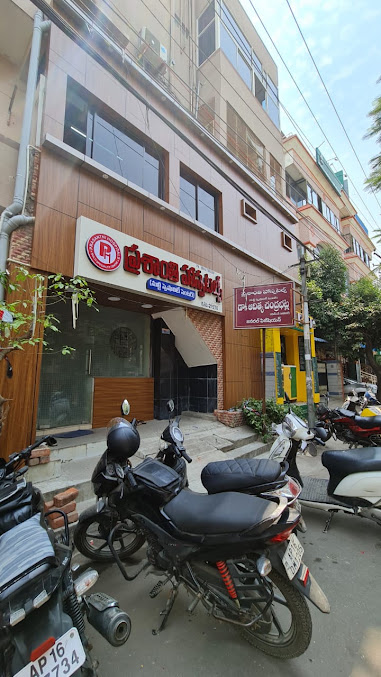

Consultations
General medicine and family physician consultations, with Ayurvedic care as part of our integrative approach.
Meet the doctors →A family-run modern medicine hospital in Governorpet, Vijayawada, where personal attention is at the heart of your care.
OPD: 10:30 AM – 2:00 PM · 6:00 PM – 9:00 PM.
For appointments and consultation timings, call 895 6969 895.

Founded by Dr. C.N. Murthy, Prasanthi Hospitals provides modern medical care in a familiar, family-run setting. Our integrative approach also includes Ayurvedic consultations.
Our current OPD team includes Dr. C.S.K. Aditya, General Physician; Dr. C.N. Murthy, Family Physician; and Dr. Nishteshwar, M.D. (Ayurveda).
Dr. Nishteshwar is not available for evening OPD. Please call to confirm your doctor’s consultation time.
Read about Prasanthi Hospitals →Call the hospital to confirm your doctor's availability and consultation time. Bring your previous prescriptions and relevant medical reports.
Appointment information →Consultations and hospital support from our OPD team.
General medicine and family physician consultations, with Ayurvedic care as part of our integrative approach.
Meet the doctors →Same-day care and acute medical inpatient care within the hospital's facilities.
Explore hospital care →Routine in-house laboratory testing and an on-site pharmacy.
See supporting services →Speak with the hospital team about consultation timings, our OPD doctors and appointment arrangements.